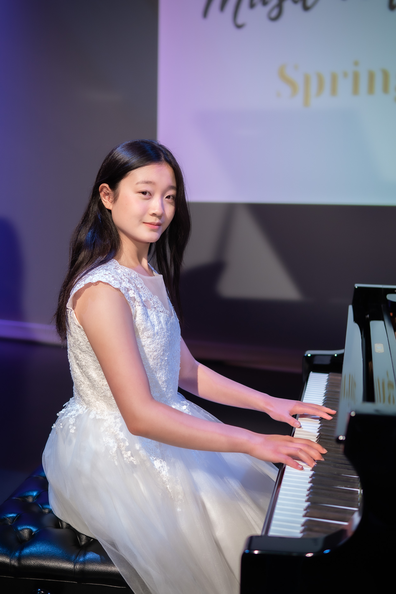
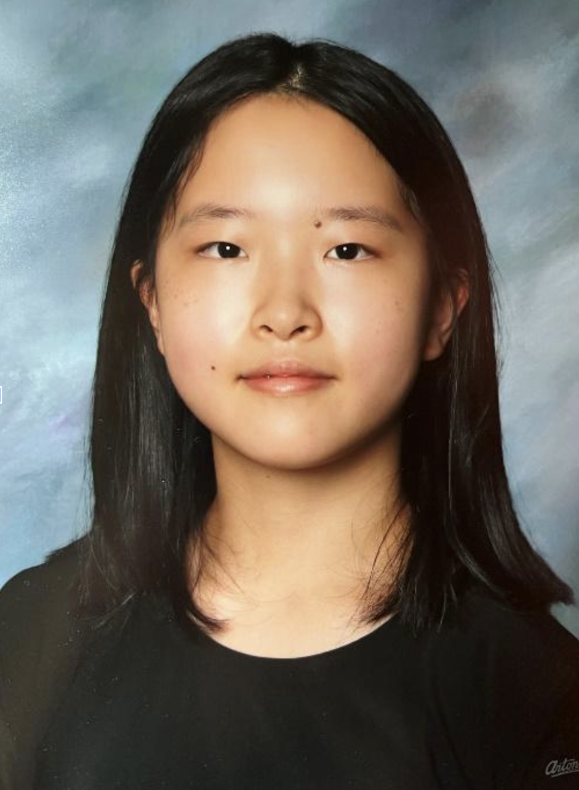
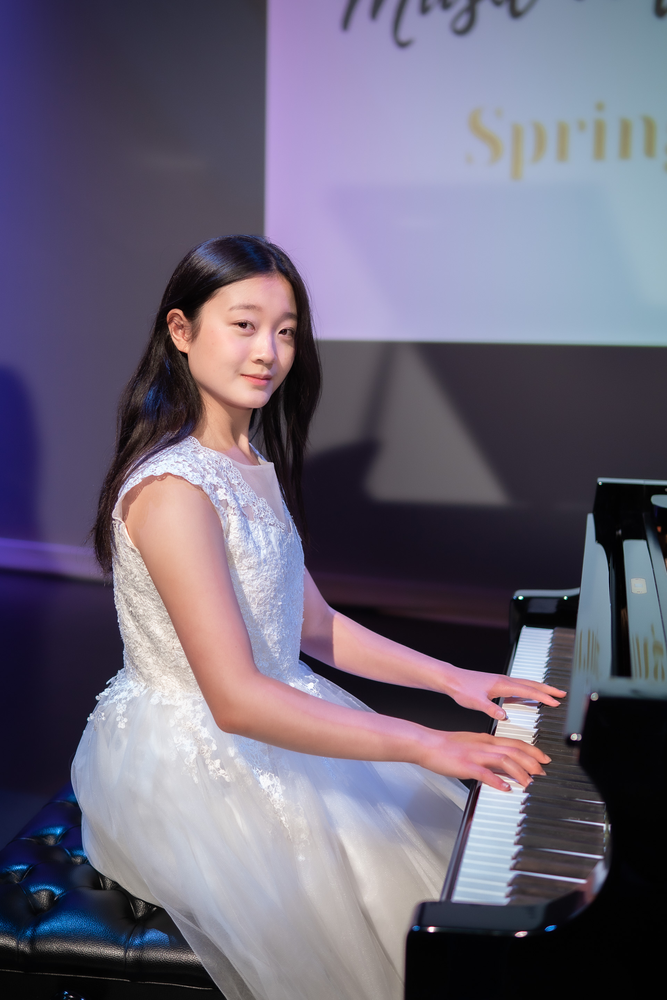
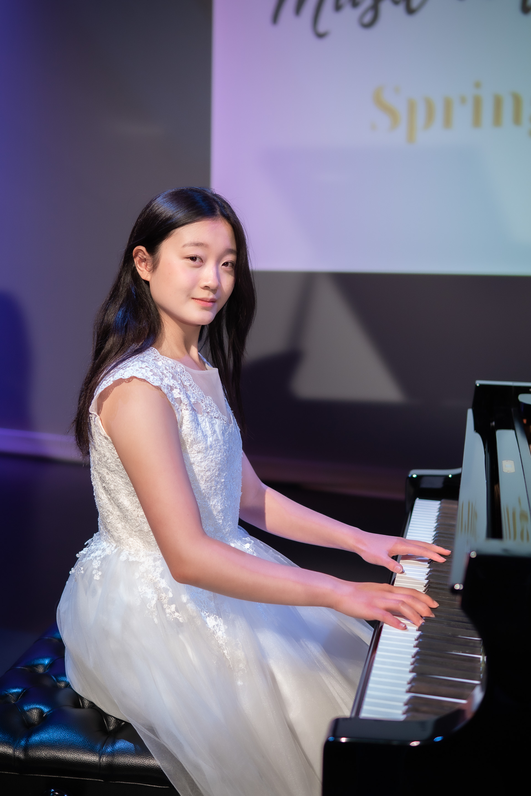

A non-profit organization pioneered by Victoria Liu and Julianne Yu
About
We are a music concert based out of North Delta that is performed by the children and youth of the Delta and Lower Mainland community. We feature a variety of instruments, including the piano, violin, viola, and harp. Our concert is non-profit; however, we ask for donations through our audience. All of our proceeds go towards the “Balding for Dollars” charity, which runs in partnership with the BC Children’s Hospital Foundation. Its funding is dedicated solely to the oncology department of BCCH to help kids and their families fight cancer.
During COVID, many social events were put on hold due to the pandemic. As a result, communities have become disconnected and isolated, which is far from what a true community should be. Our event serves as a way to reignite this communal spirit while also supporting a great cause. Not only do the performers get to connect with youth playing instruments other than their own, but the audience is also able to be immersed in a space with a variety of musical talents and sounds. Music in the Neighbourhood also gives local youth a platform to perform and showcase their hard work in a real stage setting. This is a wonderful opportunity for the community and the kids alike after these past three years, during which most concerts were held online.
Fall Charity Concert
Come support us at our Fall Charity Concert at 6:30 PM on November 24, 2024 at the North Delta Center for the Arts.

The Organizers
Victoria Liu is 18 years old and she is currently studying Computer Science at Carnegie Mellon University. She is a very talented and accomplished young pianist. She began playing the piano at age three with the Music for Young Children program and then continued her musical studies with Greg Semerdjian at the Donna Fishwick Piano Ensemble. During this time, she has shown exceptional ability as an artist and as a musician and has developed into a mature and artistic performer. Victoria has enjoyed much success in local piano competitions winning numerous trophies and scholarships. She has consistently achieved First-Class Honors with Distinction on her Royal Conservatory of Music piano practical examinations and has been a top student in her grade throughout British Columbia. She has a diverse musical background having also played the violin as a young child. Most recently, Victoria completed the ARCT Solo Performers Diploma through RCM Examinations achieving proficient marks. As a member of The Donna Fishwick Piano Ensemble, Victoria has given many performances, both as a soloist and as an ensemble pianist – duos, duets, and trios. Some concert venues include several recitals at the Shadbolt Centre for the Performing Arts, and also at Vancouver’s Circle Craft Christmas Market at the Vancouver Trade and Convention Centre. She has been one of the top performers in Burnaby’s Festival on the Lake, achieving several gold standings. Victoria has also been invited to perform several times at Vancouver’s Celebration of Excellence, an annual event featuring aspiring young artists who have achieved marks of over 90% on their examinations in music. In 2016, she traveled extensively with the Piano Ensemble – having performed in Munich, Germany, Prague, Czech Republic, Vienna and Salzburg, Austria, and Perugia, Italy. Outside of music, Victoria is an aquatic instructor with the City of Delta and a Seaquam Varsity Girls Volleyball player.

Julianne Yu is an accomplished young pianist and violinist. She started piano lessons at the age of five. She has studied with Greg Semerdjian, Jennifer Wu and is now studying with Marcel Bergmann. She has participated in and won many festivals. She completed her RCM ARCT piano exam at age 14. She is currently RCM Level 10 in violin and her teacher is Luiza Nelepcu at the Langley Community Music School (LCMS）. Julianne has attended the LCMS Senior Orchestra for 4 years. She is attending Grade 12 at Burnsview Secondary School. She has been in a piano trio “Brio Trio” with her friends Kira and Nandini for almost two years, and they won 3rd place at Kiwanis Provincials in May 2023, and 1 st place at Vancouver Kiwanis Festival in 2024.

 
